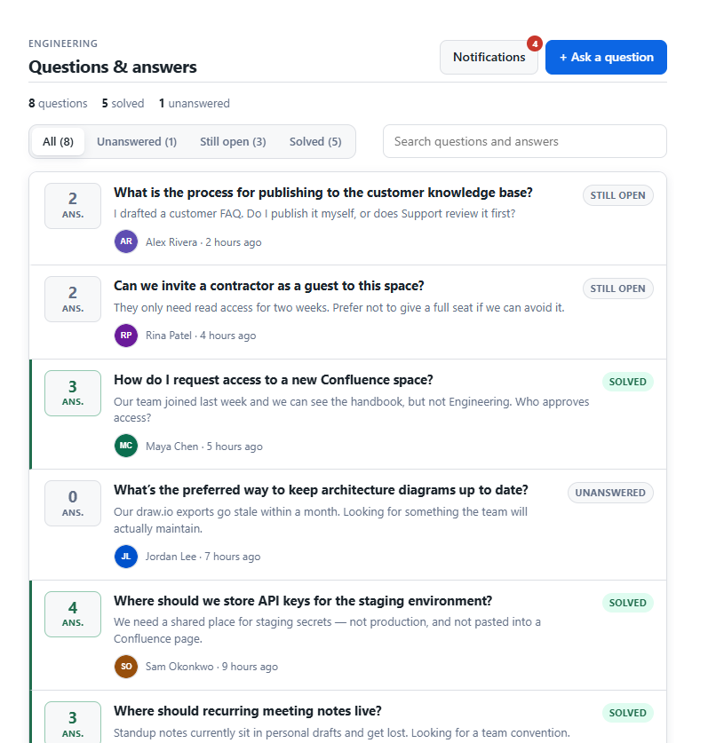
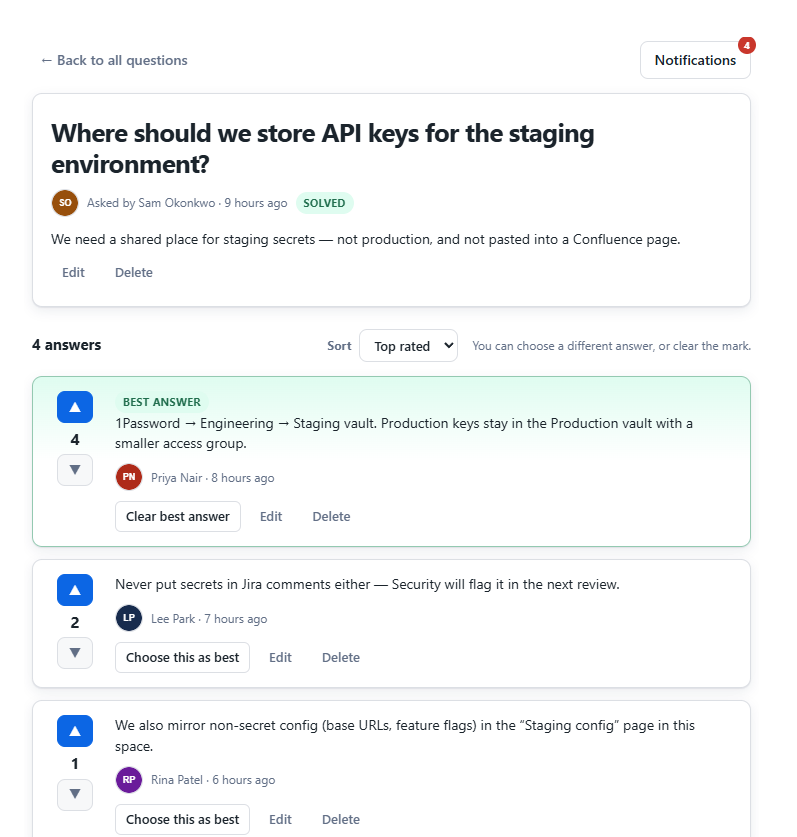
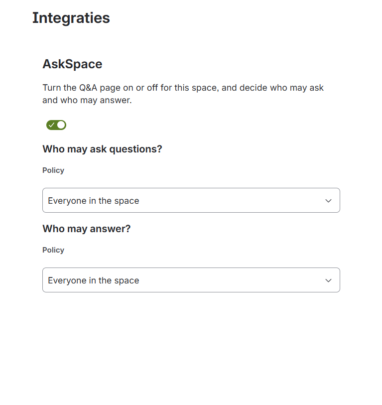
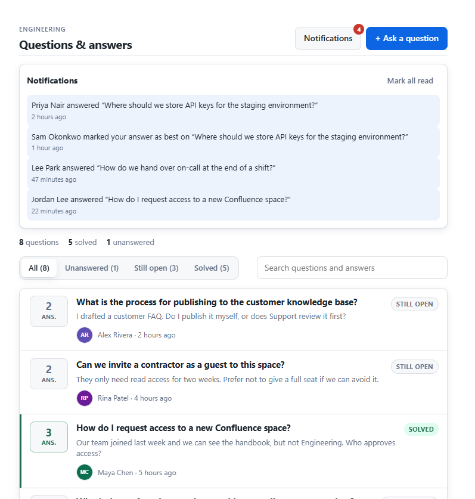

Ask
Titles and details with avatars and timestamps. Filter unanswered, open, and solved.
Answer
Votes in place. One answer can be marked best — not by the asker.
Govern
On or off per space. Ask and answer policies set independently.
Confluence app by Dortus
Per-space Q&A for Confluence, with separate ask and answer permissions.

Questions live in the space — searchable, filterable, with a clear best answer.
Why it exists
People ask in chat, someone answers, and a week later the next person asks again. AskSpace keeps that loop in Confluence — without forcing Q&A on every space site-wide.
Titles and details with avatars and timestamps. Filter unanswered, open, and solved.
Votes in place. One answer can be marked best — not by the asker.
On or off per space. Ask and answer policies set independently.
In the product
Screens
From a live Engineering space with realistic team questions.



Privacy and terms cover AskSpace and future Dortus apps.
Email Dortus